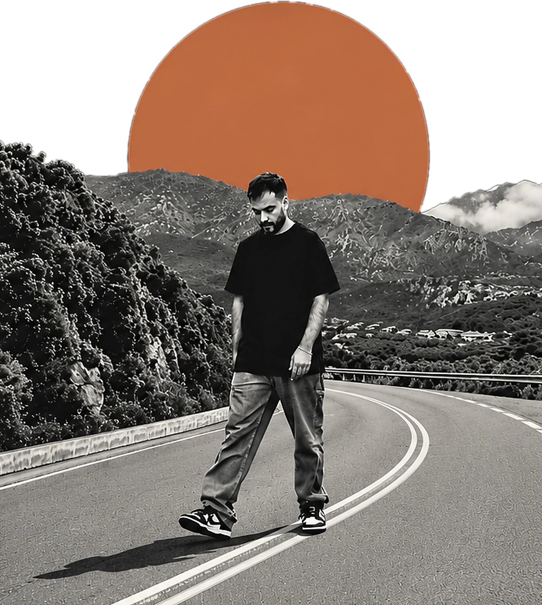

Dimitris Syrros
Senior front-end engineer
I build fast, accessible interfaces with React.js, Next.js and TypeScript, and I care about performance as much as taste.

Trusted by
Roles and dates
- Senior Frontend Developer – Tech Team Lead–now
- forApplication Development Senior Analyst–
- forAssociate SW Engineer–
From betting to banking to flight booking
Seven years, multiple teams. Hover or tap a dot to see what I did there.
-
to now
Started as a developer, now Tech Team Lead of the new Payments frontend team. I’m leading the Redux Form → React Hook Form migration, and told a CityJS meetup how it’s going. I’ve worked extensively on moving the codebase from JavaScript to TypeScript, was a key engineer on the new Dynamic Booking Flow, and built a 3-D Secure flow that makes sure payment failures are handled properly.
-
–
Two years on Eurobank’s e-banking platform and its admin site, building modular, reusable React and Redux components that new features could stand on. I improved the code as I shipped, reviewed my peers’ work, helped new team members find their feet, and worked side by side with the Product Owner from the first development talks onward.
-
–
Where it started: interfaces for Intralot’s Canvas, the betting software behind national betting providers around the world. I built front ends in React and Redux with Styled Components and SASS, wrote PHP 7+ APIs on the MVC pattern, and made caching and WebSockets faster with Go and Redis.
Let’s build something that is a joy to use.
I’m happy to talk about front-end roles, migrations and performance work.